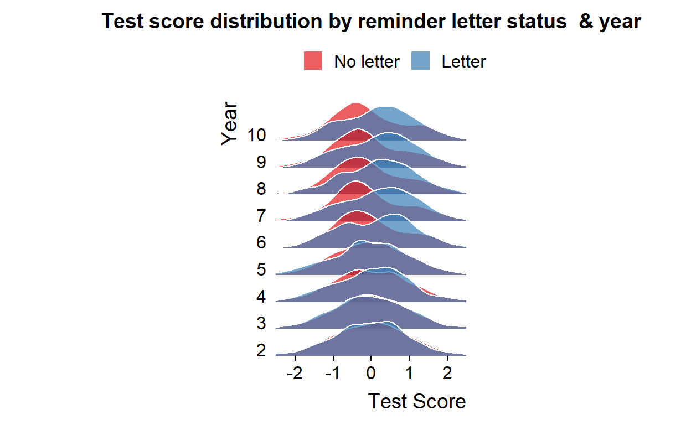

Welcome!
Hi!
This tutorial is written for Applied Economics students at the University of Bristol.
How this works
- The tutorial is structured as a complete research project starting with loading the raw data and ending with a chart comparing the estimates across approaches.
- The tutorial aims at covering the same methods we covered in Stata during the term.
- All data used is directly downloadable. You should therefore be able to download the data and try the methods in R on your own computer.
- The tutorial mainly consists of code blocks and the resulting output. Every now and then I include some references to how I would do the same task in Stata or key differences to Stata.
I appreciate feedback, thanks.
Hans (November 11 , 2021)
1 Research question & data
You will only see the above content in the output.
1.1 The research question
Our goal is to answer the following fictitious research question:
Does attending a summer school improve test scores?
The research question will be addressed using a fictitious simulated dataset.
1.2 The fictitious setting
The research question is inspired by papers such as Matsudaira (2007) and the survey on interventions for low SES students by by Dietrichson et al ( 2017).
The fictitious setting is as follows:
- In the summer break between year 5 and year 6, (roughly corresponding to age 10) there is an optional summer school.
- The summer school could be focusing on the school curriculum, or it could be focused on skills that lead to improved schooling outcomes (for example “grit” as in Alan et al (2019)).
- The summer school is free, but enrollment requires active involvement by parents.
- We are interested in whether participation in the summer school improves child outcomes.
1.3 The fictitious data
We have three datasets to study the research question:
- We use this as example on how to load data stored in a csv format.
- This dataset contains information about person id, school id, an indicator variable that takes the value of 1 if the individual participated in the summer school, information about gender, parental income and parental schooling, and test scores in year 5 (before the treatment) and year 6.
- We use this as example on how to load data stored in Stata format.
- This dataset contains information about person id, which enables us to link it to the first dataset. We will use this to practice merging data.
- The dataset also contains information about whether the individual received a reminder letter.
- We use this as example on how to load data stored in a Microsoft Excel format.
- This dataset contains information about person id, which enables us to link it to the first dataset.
- The dataset also contains information about test scores in earlier (<5) and later years (>6).
Let’s get started!
2 Loading & merging the data
2.1 Installing and loading a “package”
The first item on our to do list is to load the datasets. The first dataset is in a csv format. There are several ways to load a csv document into R. I am going to use read_csv() from the readr package. Before we can use this package we need to install it. We install a package with the install.packages() function, where we insert the name of the package in parenthesis. This procedure corresponds to ssc install outreg to install outreg in Stata.
An important difference to Stata is that we also have to tell R to use the new package in every new session. We do that with library(). However we only have to install it once. So to install and load readr we run the following command:
install.packages("readr")To load the readr package we run the following command:
library("readr")While we only have to install a package once on each computer, we have load it in every new session.
2.2 Loading a csv data file
Having installed readr we are now ready to use the read_csv() function to load our first dataset. We will load the dataset school_data_1.csv by inserting the path to the file in the parenthesis. In the example below we first load the readr package to illustrate that we have to load it in every new session. However, in later code blocks we’ll leave out the library() call for packages that have already been loaded.
PS. note also that we include comments in code block below. Comments are lines that R ignores and these lines always start with a # symbol.
# load readr package
library("readr")
# load data
read_csv("C:/Users/hhs/school_data_1.csv")## # A tibble: 3,491 × 8
## person_id school_id summercamp female parental_schooling parental_lincome
## <int> <int> <dbl> <dbl> <dbl> <dbl>
## 1 1 5 0 1 10 12.9
## 2 2 14 1 0 11 14.7
## 3 3 7 1 0 14 16.1
## 4 4 8 0 0 12 14.6
## 5 5 9 1 0 11 13.8
## 6 6 26 1 1 11 14.7
## 7 7 13 1 1 11 14.4
## 8 8 11 0 1 13 15.0
## 9 9 23 1 1 11 14.3
## 10 10 9 1 1 11 13.8
## # … with 3,481 more rows, and 2 more variables: test_year_5 <dbl>,
## # test_year_6 <dbl>Stata users would now expect that the dataset is loaded in the memory and everything I do now relates to this dataset. Stata users will be disappointed. When R executes the command above it loads the data, but then it says: “Hey, Hans didn’t tell me what to do with the dataset, so I will just print the contents of it and forget it.”
While Stata (at least in older versions) is based on having one dataset loaded at a time, we can have many datasets loaded at once in R. Therefore, to identify the dataset we need to give it a name. In this example we tell R to store the new dataset under the name school_data_1 we use the assignment operator <-, but = would also work. However, it is a good habit to use the assignment operator, because it makes life a bit easier in more advanced situations that will meet later on your R journey (not in this tutorial).
# load data and assign it to an object with the name school_data_1
school_data_1<-read_csv("C:/Users/hhs/school_data_1.csv")In Stata my first step after loading the data is typically to use browse to take a look at the data. In R we can do that with View(school_data_1). I will not show that command here. Instead I will present the function head() that prints the head of the dataset with the first 6 rows.
# Use head() to print first 6 observations of school_data_1
head(school_data_1)2.3 Loading a Stata data file
We will now load a Stata dataset into R. To load a dta file I will use the read.dta13() function from the readstata13 package. The syntax is then very similar to the read_csv() syntax. This time we will use tail() to show the last 8 observations.
# load readstata13
library("readstata13")
# use read.dta13 from readstata13 to load a Stata dataset
school_data_2<- read.dta13("C:/Users/hhs/school_data_2.dta")
# print the 8 rows in the tail
tail(school_data_2,n=8)2.4 Loading an xlsx file
Finally, we’ll load the the xlsx file school_data_3.xlsx for that we’ll use the read.xlsx() function from the openxlsx package. Again, the syntax is very similar to what we’ve seen before. This time we will use the glimpse() function from the dplyr package to get a glimpse of the dataset.
# Load openxlsx and dplyr
library("openxlsx")
library("dplyr")
# Use read.xlsx from openxlsx to load .xlsx file
school_data_3 <- read.xlsx("C:/Users/hhs/school_data_3.xlsx")
# use glimpse to get a "glimpse" of the loaded dataset
glimpse(school_data_3)## Rows: 3,491
## Columns: 10
## $ person_id <int> 1, 2, 3, 4, 5, 6, 7, 8, 9, 10, 11, 12, 13, 14, 15, 16, 17…
## $ test_year_2 <dbl> 1.090117, 1.246309, 2.726472, 2.693032, 1.660545, 2.22377…
## $ test_year_3 <dbl> 1.914594, 1.154470, 2.269011, 2.413203, 1.828067, 2.27566…
## $ test_year_4 <dbl> 2.065805, 1.582455, 3.247252, 1.479452, 1.361972, 2.38510…
## $ test_year_7 <dbl> 2.377697, 1.747376, 3.017764, 2.637954, 1.904636, 3.37613…
## $ test_year_8 <dbl> 2.032904, 2.444041, 3.361646, 3.021940, 2.109774, 3.24542…
## $ test_year_9 <dbl> 1.493803, 1.663050, 3.387020, 2.761513, 2.285818, 2.96503…
## $ test_year_10 <dbl> 1.880512, 1.833769, 2.968617, 2.088086, 1.845694, 3.30819…
## $ learnings <dbl> 10.236394, 8.278911, 8.966529, 8.876466, 8.770518, 10.484…
## $ school_id <int> 5, 14, 7, 8, 9, 26, 13, 11, 23, 9, 25, 15, 3, 4, 17, 7, 1…2.5 Merging the datasets
Let’s now merge the three datasets. We will use the merge() function for that. In merge we first state the names of the two datasets to merge. We then tell R the column(s) to use to merge the two datasets with by=..... As a default R includes all rows that are observed in both datasets (based on the by variable), but we can set all=TRUE to keep all rows from both datasets, or all.x=TRUE to keep all rows from the first dataset and all rows that were merged, and finally all.y=TRUE to keep all rows from the second dataset. The default behaviour of R corresponds to using the option keep(3) in Stata, and Stata’s default option corresponds to using all=TRUE in R.
Here as example where merge the first two datasets. We then use the dim() function to get the dimensions of the new merged dataset in terms of the number of rows and the number of columns.
And hey, this is the first dynamic code block. You can edit the code (there is no need in this case) and click Run Code to see what happens.
# merge school_data_1 with school_data_2
school_data_merged<-merge(school_data_1,school_data_2,by="person_id")
dim(school_data_merged)# dimensions of school_data_1
dim(school_data_1)We note that the merged dataset has 3491 rows and 9 columns. We actually didn’t check the number of rows in the raw datasets (that would have been a good thing to do; maybe you can do it by changing the code above?). If all rows are merged we should have the same number of rows as in the original dataset. From above we knew that school_data_1 has 8 columns and by merging the school_data_2 on we also get the column with the information about whether the family receiving the letter, making it to in total 9 columns.
Important difference to Stata: A key difference between Stata and R merge is that in case a variable in the first dataset has the same name as a column in the second dataset, R will automatically rename the column names by adding suffices .x (the column from the first dataset) and .y (the column from the second dataset). Stata just overwrites the columns.
Now it is your turn, in the block below we want o
- Merge school_data_1 and school_data_2 by the person_id column and save the merged dataset under the name school_data.
- Merge school_data_3 with school_data and overwrite school_data. Note in this case we merge by person_id and school_id columns. This is not necessary (because person_id is unique), but serves as an example on how to merge by more columns using
c(). name school_data. - Use the
summary()function to obtain summary statistics of the variables.
# Merge school_data_1 and school_data_2 and save as school_data_merged
# Merge school_data_3 with school_data_merged
# summary statistics# Merge school_data_1 and school_data_2 and save as school_data_merged
school_data_merged<-merge(school_data_1,school_data_2,by="person_id")# Merge school_data_1 and school_data_2 and save as school_data_merged
school_data_merged<-merge(school_data_1,school_data_2,by="person_id")
# Merge school_data_3 with school_data_merged
school_data_merged<-merge(school_data_merged,school_data_3,by=c("person_id","school_id"))# Merge school_data_1 and school_data_2 and save as school_data_merged
school_data_merged<-merge(school_data_1,school_data_2,by="person_id")
# Merge school_data_3 with school_data_merged
school_data_merged<-merge(school_data_merged,school_data_3,by=c("person_id","school_id"))
# summary statistics
summary(school_data_merged)3 Cleaning the data
3.1 Tidying the data
Now that we have merged the datasets, we want to make sure that the merged dataset satisfies the Tidy Data Principles. From these principles we know that the number of columns should correspond to the number of variables in the dataset. But how many variables are there?
Let’s now compare the number of variables to the number of columns:
# Use the dim() functions to get the number of rows and columns# Use the dim() functions to get the number of rows and columns
dim(school_data_merged)# Alternatively we can use the nrow() functions to get the number of columns
ncol(school_data_merged)Oh no! The number of columns does not correspond to the number of variables. Let’s sort this out. The issue is that the variables test_year_5 contain information about the test score and the year. We need to separate this out. We can use tools from the tidyr package to make the dataset tidy. Specifically, we use pivot_longer() which corresponds to reshape long in Stata. See also section 9.2 in the R introduction for details.
# load tidyr package
library("tidyr")
# make data tidy (make long)
school_data_tidy<-school_data_merged%>%
pivot_longer(
cols = starts_with("test_year"),
names_to = "year",
names_prefix = "test_year_",
names_transform = list(year = as.integer),
values_to = "test_score",
)
# ncol to get the number of columns of the new dataset
ncol(school_data_merged)## [1] 17Hurray! We now have a dataset where the number columns correspond to the number of variables.
3.2 Sample Selection
We now have a dataset that satisfies the tidy data principles. The next task before is the sample selection. The only sample selection we are concerned with in this exercise is missing values. We will use the skim() function to assess how many missing values there are in our dataset. skim() is one of my favourite functions in R to get an overview of the datasets, it comes from the skimr package.
# Load skimr
library("skimr")
# Use skim() to skim the data
skim(school_data_tidy)We can easily observe how many rows and columns there are, the variable types, the number of missing values. The mean, standard deviations, percentiles, and we even get a small histogram.
We observe that the column parental_schooling has 45 missing values and the variable test_score has 11 missing values. Let’s assume that these values are missing at random and remove these rows. Here we use filter() for that. The filter() function takes two arguments. First, the name of the original dataset, and secondly the condition a row must satisfy to be kept in the filtering process. The condition we want to satisfy is that !is.na(parental_schooling). The is.na() is a function is true if the element in ( ) is missing. We use the ! to achieve the opposite of that. In other words that parental schooling is not missing.
# Select only rows with no missing values
school_data_selected<-filter(school_data_tidy,!is.na(parental_schooling),!is.na(test_score))
# Use skim() to skim the data again
skim(school_data_selected)Very good! We’ve now created a new dataset containing only complete cases. Let’s now create a nice looking table.
3.3 Modifying the data
Our next step is to make some modifications to the data. First, we will rename the summercamp variable to summerschool. We do that with the rename() function. The rename() function has a similar syntax to filter. We first state the name of the original dataset and then the rename expression.
# rename summercamp to summerschool
analysisdata<-rename(school_data_selected, summerschool=summercamp)
# use head to view the first 6 observations
head(analysisdata)Brilliant. In the next step we want to transform our test_score variable to have mean of zero and a standard deviation of one. Importantly we want to do this standardization within year. In Stata this would be a task for bys year:. In Stata we first specify what variable to group the data on, and the apply the functions sd and mean on that level.
# Standardize test score
# Group analysisdata by year
analysisdata<-group_by(analysisdata,year)
# Create a new variable with mutate
analysisdata<-mutate(analysisdata, test_score=(test_score-mean(test_score))/sd(test_score))
# show mean of test_score
print(paste("Mean of test score:",mean(analysisdata$test_score)))
#show sd of test_score
print(paste("SD of test score:",sd(analysisdata$test_score)))In the example above we use
print()to print output to the console (just like display in Stata).paste()to concatenate elements togetheranalysisdata$test_scoreto extract the variable test_score from the analysisdata dataset.mean()andsd()to calculate means and standard deviations. Note that this only works because we already removed the missing values. If we applymean()on a vector that includes missing values it will return a missing value unless we specify the optionna.rm = FALSE.
4 Descriptive Statistics
We’ve now managed to load csv, dta, and xlsx files. We’ve also managed to merge them, restructure the dataset, and we have removed missing values. The next step in our empirical project is to create some tables and charts to describe the dataset.
Our goal is to create a table that shows means, standard deviations, and other statistics that gives us and the reader an impression of the dataset. We already know at least two ways to calculate summary statistics:
summary()from base R. This function actually works on a lot of object types in R. It always gives a good summary. But our goal is to create a table that we can include in a Microsoft Word or Latex document.skim()from the skimr package.
4.1 A quick way to create a nice looking table
We will first use a cousin of skim() to create a table with summary statistics that can be exported to various formats, included Latex. The cousin comes from the modelsummary package and is called datasummary_skim(). Let’s first create the default table:
# load modelsummary
library("modelsummary")
# create a summary stat table
analysisdata%>%
filter(year==2)%>%
select(female,starts_with("paren"),letter,summerschool,test_score)%>%
datasummary_skim()Let’s change the appearance of the table and export it to Word. When exporting it to Latex, we can’t have histogram’, so we disable them. We specify output="docx" to write to a Word file. We can also export the table to other formats like LaTex.
# load modelsummary
library("modelsummary")
# create a summary stat table in Latex format
analysisdata%>%
filter(year==2)%>%
select(female,starts_with("paren"),letter,summerschool,test_score)%>%
datasummary_skim( fmt="%.2f",
histogram=FALSE, output="tab_summary_statistics.docx")| Unique (#) | Missing (%) | Mean | SD | Min | Median | Max | ||
|---|---|---|---|---|---|---|---|---|
| year | 1 | 0 | 2.00 | 0.00 | 2.00 | 2.00 | 2.00 | |
| female | 2 | 0 | 0.52 | 0.50 | 0.00 | 1.00 | 1.00 | |
| parental_schooling | 12 | 0 | 11.32 | 1.10 | 10.00 | 11.00 | 23.00 | |
| parental_lincome | 3486 | 0 | 14.56 | 0.69 | 12.67 | 14.52 | 19.45 | |
| letter | 2 | 0 | 0.25 | 0.43 | 0.00 | 0.00 | 1.00 | |
| summerschool | 2 | 0 | 0.46 | 0.50 | 0.00 | 0.00 | 1.00 | |
| test_score | 3486 | 0 | −0.00 | 1.00 | −4.13 | 0.02 | 3.71 |
Brilliant.
4.2 Custom tables
To customize our table of summary statistics a bit more we can use the function datasummary() (from the modelsummary package, but we have already loaded that1). This function allows us to enter a formula for the structure of our table. Try running the code below and try also to make a change to also include the 75th percentile and to include the parental_lincome variable.
# create a summary stat table
datasummary(female+parental_schooling+
letter+test_score~Factor(summerschool)*(Mean+SD),
sparse_header = FALSE,
data=filter(analysisdata,year==2))# create a summary stat table
datasummary(female+parental_schooling+parental_lincome+
letter+test_score~Factor(summerschool)*(Mean+SD+P75),
sparse_header = FALSE,
data=filter(analysisdata,year==2))In the example above we
List the variables to include separated with a +:
female+parental_schooling+pa...Use a
~to separate the list of variables from the formula.Use the formula
Factor(summerschool)*(Mean+SD)to show that we want to show the mean and standard deviation separately for each values of the variablesummerschool. We useFactor()to tell R that it should consider summerschool as a binary variable. We could also have done that in the data tidying process. We can also reverse the ordering(Mean+SD)*Factor(summerschool), which would then first show the mean and standard deviation and then split by summerschool within these values.Use
sparse_header = FALSEto specify that we actually want to include the “summerschool” as a header.
4.3 Variable names in tables
So far we’ve used variable names as labels in our table. In contrast to Stata, R allows for labels with white space, and we could therefore rename the variables to give nicer looking names in our table. However, we can also just assign a “label” when creating the table as shown below:
# load modelsummary
library("modelsummary")
# create a summary stat table
datasummary((`Female`=female)+
(`Parental schooling (years)`=parental_schooling)+
(`Parental income (log)`=parental_lincome)+
(`Received reminder letter`=letter)+
(`Test Score`=test_score)~
(`Attended summer school`=Factor(summerschool))*
(Mean+SD),
sparse_header = FALSE,
data=filter(analysisdata,year==2))| Mean | SD | Mean | SD | |
|---|---|---|---|---|
| Female | 0.51 | 0.50 | 0.53 | 0.50 |
| Parental schooling (years) | 11.03 | 0.74 | 11.67 | 1.33 |
| Parental income (log) | 14.35 | 0.52 | 14.81 | 0.79 |
| Received reminder letter | 0.09 | 0.29 | 0.43 | 0.49 |
| Test Score | −0.29 | 0.85 | 0.34 | 1.05 |
4.4 Exporting our table to Microsoft Word
To save our datasummary() table to Microsoft Word or Latex, we use the same expression as with datasummary_skim(), as illustrated below:
# load modelsummary
library("modelsummary")
#library("flextable")
# create a summary stat table
datasummary((`Female`=female)+
(`Parental schooling (years)`=parental_schooling)+
(`Parental income (log)`=parental_lincome)+
(`Received reminder letter`=letter)+
(`Test Score`=test_score)~
(Mean+SD+P25+P50+P75),
sparse_header = FALSE,
data=filter(analysisdata,year==2),
output = 'tab_descriptive_statistics.docx')5 Descriptive charts
The ggplot world is covered in detail in R introduction, but let us briefly cover a few charts here as well. You will also see more charts in later chapters.
5.1 A scatter plot
Our first chart is a scatter plot. We are interested in whether test score and parental income are correlated. We therefore create a scatter plot of test scores in year 5 against parental income. We add a fitted line as well.
In the following example we
- Initiate a
ggplot()object using the analysisdata filtered to only include year 5. - Specify that parental_lincome should be used on the x-axis and test_score on the y-axis in
aes()insideggplot(). - Use
geom_smooth()to include a fitted line. - Use
geom_point()to add the scatters.
This chart does not look very good. You can use the tools from the R introduction to polish it (or you can use the hints to get some suggestions).
# load ggplot2
library("ggplot2")
# create a scatter plot with a fitted line
ggplot(analysisdata%>%filter(year==5),
aes(x=parental_lincome,y=test_score))+
geom_smooth() +
geom_point()# Make the line green by setting the color to the html colour code "#145c21"
# load ggplot2
library("ggplot2")
# create a scatter plot with a fitted line
ggplot(analysisdata%>%filter(year==5),
aes(x=parental_lincome,y=test_score))+
geom_smooth(color="#145c21") +
geom_point()# Make the scatters green, partly transparent (with alpha=), and change the size of them.
# load ggplot2
library("ggplot2")
# create a scatter plot with a fitted line
ggplot(analysisdata%>%filter(year==5),
aes(x=parental_lincome,y=test_score))+
geom_smooth(color="#145c21") +
geom_point(alpha=0.1,size=0.85,color="#63a668")# Change the colour of the background and the grid lines
# load ggplot2
library("ggplot2")
# create a scatter plot with a fitted line
ggplot(analysisdata%>%filter(year==5),
aes(x=parental_lincome,y=test_score))+
geom_smooth(color="#145c21") +
geom_point(alpha=0.1,size=0.85,color="#63a668")+
theme(panel.background = element_rect(fill="#ededed",color="#ededed"),
plot.background = element_rect(fill="#ededed",color="#ededed"),
panel.grid.major = element_line(colour="#a3a3a3",size=0.1))# Change the axes titles and add an overall title
# load ggplot2
library("ggplot2")
# create a scatter plot with a fitted line
ggplot(analysisdata%>%filter(year==5),
aes(x=parental_lincome,y=test_score))+
geom_smooth(color="#145c21") +
geom_point(alpha=0.1,size=0.85,color="#63a668")+
theme(panel.background = element_rect(fill="#ededed",color="#ededed"),
plot.background = element_rect(fill="#ededed",color="#ededed"),
panel.grid.major = element_line(colour="#a3a3a3",size=0.1))+
labs(x="Log(Parental Income)",y="Test Score (Mean=0,SD=1)", title="Test scores & Parental income")5.2 Bar chart and boxplot
Okay, we observe that test score is correlated with parental income. That is not surprising. Now let’s also create charts to assesses whether summer school attendance is correlated with individual characteristics. We first create a scatter plot of parental schooling and test scores in year 5 (before the summer school). This is just like above, but with schooling instead of income. Secondly, we create a bar chart showing average test score in year 5 (before the summer school) by summer school attendance. Thirdly, we create box plots of parental income by summer school attendance. There are a few additional tricks in the following code:
- We first create the basic
ggplot()object where we load the data and specify the theme. This object is called rawchart - We then create 3 charts based on rawchart. Each chart is saved under a name.
- We use
geom_bar()to create a bar chart. We setstat="summary",fun="mean"to tell R to create a bar chart showing the mean of test_score. - We use
labs()to specify the axes titles. - We use
geom_boxplot()to create a box plot. - We use the patchwork package to combine several charts in one chart.
- Use
ggsave()to save the chart to a png file.
# Load patchwork
library("patchwork")
# Create raw chart element
rawchart<-ggplot(analysisdata%>%filter(year==4),x=as.factor(fill))+
theme_classic()
# Create bar chart of pre summer school test score and summer school
p1<-rawchart+
geom_smooth(aes(x=parental_schooling,y=test_score)) +
geom_point(aes(x=parental_schooling,y=test_score),alpha=0.1)+
labs(x="Parental schooling", y="Test Score Year 5")
# Create bar chart of pre summer school test score and summer school
p2<-rawchart+
geom_bar(aes(x=as.factor(summerschool),y=test_score),
stat="summary",fun="mean")+
labs(y="Test Score Year 5", x="Attended Summer School")
# Create bar chart of parental schooling and summer school attendance
p3<-rawchart+
geom_boxplot(aes(x=as.factor(summerschool),y=parental_lincome))+
labs(y="Parental Income (log)", x="Attended Summer School")
# Combine charts
p1/(p2+p3)
# Export chart
ggsave("fig1.png")
The three charts above show us that test scores are correlated with parental background (the scatter plot), that those who attended the summer school had better test scores before the summer school, and that parental account is correlated with summer school attendance (the box plot). In short:
5.3 Histogram & density charts
Let’s compare the test score distribution in year 6 (after the summer school) for those who attended the summer school with those who did not. We create a histogram and add a line showing the estimated density distributions. In the hints we also change the colour scheme, the legend labels, the legend position, and do a few minor tweaks.
# create a histogram and density chart
ggplot(analysisdata%>%filter(year==6),
aes(x=test_score,fill=as.factor(summerschool)))+
geom_histogram(aes(y=..density..),bins = 50,alpha=0.5,
position="identity",color="white")+
geom_density()# create a histogram and density chart
ggplot(analysisdata%>%filter(year==6),
aes(x=test_score,fill=as.factor(summerschool)))+
geom_histogram(aes(y=..density..),bins = 50,alpha=0.5,
position="identity",color="white")+
geom_density(alpha=0.0,size=1,show_legende= FALSE)+
theme_minimal()+
labs(y="Density",x="Test score",fill=" ")+
scale_fill_brewer(palette="Set2",labels=c("No summer school","Summer school"))+
theme(legend.position="top")5.4 The Joy Division Album Cover chart

The next chart is inspired by a Joy Division album cover unknown pleasures (read more here). We use geom_density_ridges() from the ggridges package.
Our goal is to compare the test score distribution for those who received the summer school reminder letter with those who did not. We are already making a step into the next chapter and assessing at the Randomized Control Trial in two dimensions. First, the test score comparisons before year 6 are informative about whether the randomization worked. Secondly, the test score comparisons from year 6 and later are informative about the reduced form effect.
# Load ggridges
library("ggridges")
# create a ggridges chart
ggplot(analysisdata,aes(y=as.factor(year),x=test_score,fill=as.factor(letter) ))+
geom_density_ridges( alpha = .7, scale=1.5,color = "white", from = -2.5, to = 2.5)+
theme_minimal()+
theme_ridges(grid = FALSE)+
scale_y_discrete(expand = c(0, 0)) +
scale_x_continuous(expand = c(0, 0)) +
scale_fill_brewer(palette="Set1",labels=c("No letter","Letter"))+
labs(x="Test Score",y="Year",fill=" ",
title="Test score distribution by reminder letter status & year")+
theme(legend.position="top",aspect.ratio=4/3,plot.title = element_text(hjust = 0.5))
The chart above tells a convincing story. In the first five years the distribution of test scores is essentially identical across those who received and those who did not receive a reminder letter. That indicates that the randomisation worked as intended. After year 5 the test score distribution of those who received a reminder letter shifted to the right compared to those who did not receive a letter suggesting a reduced form effect of the letter on our outcome. Let’s analyse that in the next sections.
6 Balancing tables
The last chart suggested that the letter that was randomly sent to some families to remind them about the summer school worked. The test score distribution of the children that received the letter shifted to the right. Importantly, the charts also suggested that there was no difference prior to the summer school. Let us now test that formally.
6.1 Pairwise t-test
We can conduct a t-test in R using t.test(). Specifically, we specify the formula test_score~summerschool to test whether the mean test_score is significantly different across the two groups specified by summerschool. Let’s do that for year 5 data:
# Filter year 5
df<-analysisdata%>%filter(year==5)
# Conduct a t test
t.test(test_score~letter,data=df)# Conduct a t test on analysisdata restricted to year 4
t.test(test_score~letter,filter(analysisdata,year==4))But what is the right interpretation of the test result?
One feature of R that I really appreciate (especially compared to Stata) is that I can skip steps and directly insert functions within other functions. For example if I know that I am not going to use the selected dataset again, we don’t need to create it first. We can simply specify the selection criteria in the data argument of t.test() as shown by the hints to the code block above, where we use year 4 instaed of year 5.
6.2 A publication ready table of mean comparisons
If we want to create a nice looking balancing table and insert it in Word, we can use datasummary_balance() from the modelsummary package. We load the estimatr package because it enables datasummary_balance() to calculate and include the pairwise t-tests directly into the table
# Load libraries
library(modelsummary)
library(estimatr)
# Filter and modify data
testdata<-analysisdata%>%
filter(year==5)%>%
ungroup()%>%
mutate(Treated=ifelse(letter==1,"Letter","No Letter"))%>%
select(female,parental_schooling,parental_lincome,test_score,Treated)%>%
rename(`Female`=female,
`Parental schooling (years)`=parental_schooling,
`Parental income (log)`=parental_lincome,
`Test Score`=test_score)
# Table with balancing test
datasummary_balance(~Treated,
data = testdata,
title = "Balance of pre-treatment variables",
notes = "Notes: This is a brilliant table!",
fmt= '%.5f',
dinm_statistic = "p.value")| Mean | Std. Dev. | Mean | Std. Dev. | Diff. in Means | p | |
|---|---|---|---|---|---|---|
| Female | 0.52033 | 0.49988 | 0.51355 | 0.49991 | −0.00677 | 0.73032 |
| Parental schooling (years) | 11.31359 | 0.97129 | 11.32952 | 1.14573 | 0.01593 | 0.69028 |
| Parental income (log) | 14.56467 | 0.66201 | 14.56289 | 0.70338 | −0.00178 | 0.94629 |
| Test Score | -0.01950 | 0.99990 | 0.00641 | 1.00014 | 0.02591 | 0.50968 |
| Notes: This is a brilliant table! |
This looks nice!The table suggests that all variables are well balanced across treated (receiving a letter) and untreated.
As before, we can simply add the option output=tab_balancing.docx if we want to export the table to Microsoft Word.